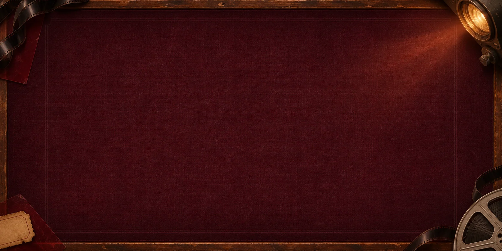
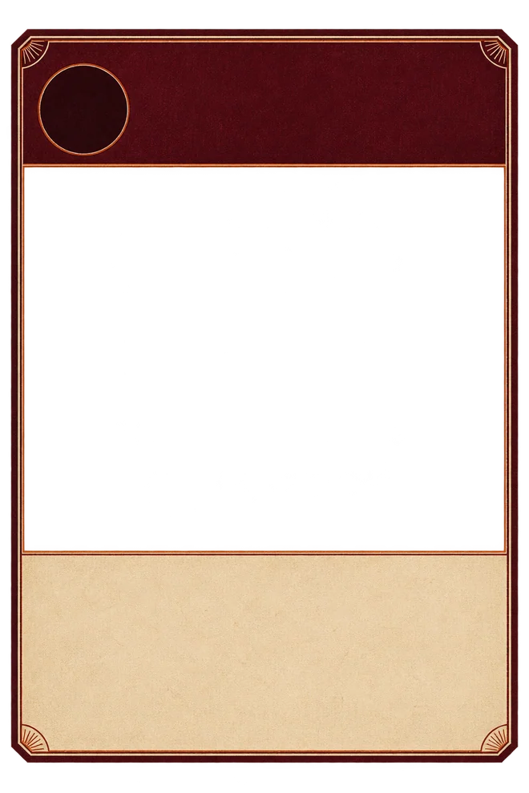
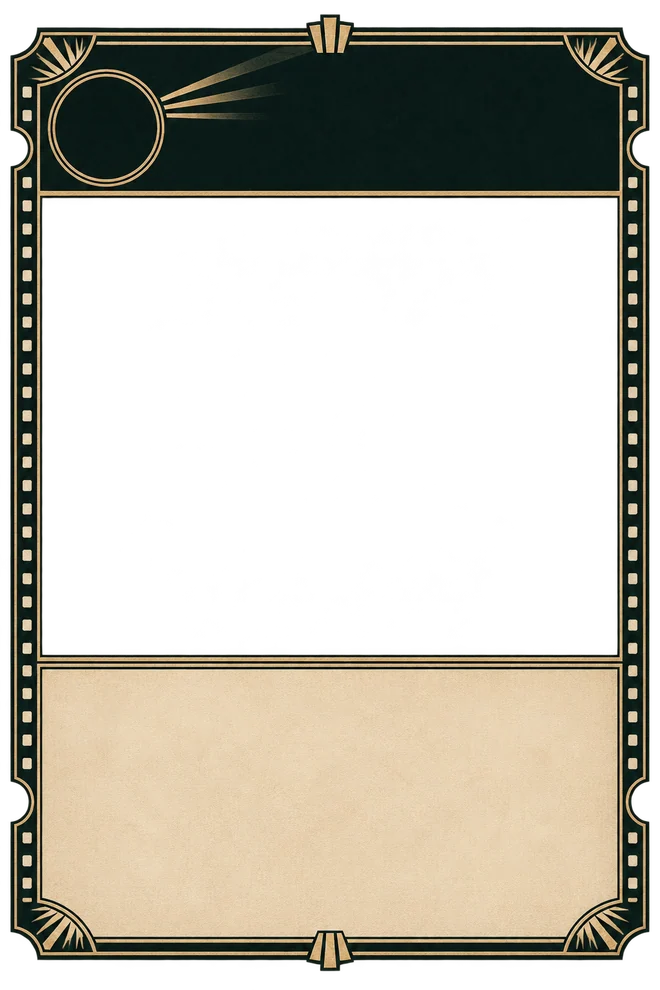

Table de projection

Les cadres de cartes
Personnage à gauche et Ref à droite.
Cadres utilisés


Le cadre bordeaux évoque une carte imprimée. Le cadre vert, perforé comme une pellicule, identifie les Refs. Les deux laissent une grande fenêtre pour une photographie.
Cabinet des reliques
Personnage♜Capacité⚔ ♥
Ref◇Effet⚡
Un album d’archives, avec blasons, bronze et rubis. Les deux silhouettes empruntent au cartouche et à la fiche de collection.
Fanzine de tournoi
Personnage✶Capacité⚔ ♥
Ref▶Effet⚡
Le carton ivoire évoque les photocopies de fanzine. La Ref devient un ticket rose à détacher.